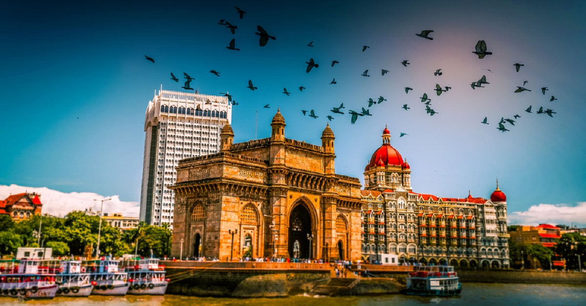

Mumbai, formerly Bombay, city, capital of Maharashtra state, southwestern India. It is the country’s financial and commercial centre and its principal port on the Arabian Sea.Located on Maharashtra’s coast, Mumbai is India’s most-populous city, and it is one of the largest and most densely populated urban areas in the world. It was built on a site of ancient settlement, and it took its name from the local goddess Mumba—a form of Parvati, the consort of Shiva, one of the principal deities of Hinduism—whose temple once stood in what is now the southeastern section of the city. It became known as Bombay during the British colonial period, the name possibly an Anglicized corruption of Mumbai or perhaps of Bom Baim (“Good Harbour”), supposedly a Portuguese name for the locale. The name Mumbai was restored officially in 1995, although Bombay remained in common usage.
Mumbai, long the centre of India’s cotton textile industry, subsequently developed a highly diversified manufacturing sector that included an increasingly important information technology (IT) component. In addition, the city’s commercial and financial institutions are strong and vigorous, and Mumbai serves as the country’s financial hub. It suffers, however, from some of the perennial problems of many large expanding industrial cities: air and water pollution, widespread areas of substandard housing, and overcrowding. The last problem is exacerbated by the physical limits of the city’s island location. Area about 239 square miles (619 square km). Pop. (2001) 11,978,450; urban agglom., 16,434,386; (2011) 12,478,447; urban agglom., 18,414,288.The city of Mumbai occupies a peninsular site on Bombay Island, a landmass originally composed of seven islets lying off the Konkan coast of western India. Since the 17th century the islets have been joined through drainage and reclamation projects, as well as through the construction of causeways and breakwaters, to form Bombay Island. East of the island are the sheltered waters of Mumbai (Bombay) Harbour. Bombay Island consists of a low-lying plain, about one-fourth of which lies below sea level; the plain is flanked on the east and west by two parallel ridges of low hills. Colaba Point, the headland formed on the extreme south by the longer of those ridges, protects Mumbai Harbour from the open sea.

The name Mumbai (Marathi: मुंबई, Gujarati: મુંબઈ, Hindi: मुंबई) derived from Mumbā or Mahā-Ambā—the name of the patron goddess (kuladevata) Mumbadevi of the native Koli community—and meaning "mother" in the Marathi language, which is the mother tongue of the Koli people and the official language of Maharashtra.The Koli people originated in Kathiawar and Central Gujarat, and according to some sources they brought their goddess Mumba with them from Kathiawar (Gujarat), where she is still worshipped.However, other sources disagree that Mumbai's name was derived from the goddess Mumba.
The oldest known names for the city are Kakamuchee and Galajunkja; these are sometimes still used. In 1508, Portuguese writer Gaspar Correia used the name "Bombaim" in his Lendas da Índia (Legends of India). This name possibly originated as the Galician-Portuguese phrase bom baim, meaning "good little bay", and Bombaim is still commonly used in Portuguese. In 1516, Portuguese explorer Duarte Barbosa used the name Tana-Maiambu: Tana appears to refer to the adjoining town of Thane and Maiambu to Mumbadevi.
Other variations recorded in the 16th and the 17th centuries include: Mombayn (1525), Bombay (1538), Bombain (1552), Bombaym (1552), Monbaym (1554), Mombaim (1563), Mombaym (1644), Bambaye (1666), Bombaiim (1666), Bombeye (1676), Boon Bay (1690),and Bon Bahia. After the English gained possession of the city in the 17th century, the Portuguese name was anglicised as Bombay. Ali Muhammad Khan, imperial dewan or revenue minister of the Gujarat province, in the Mirat-i Ahmedi (1762) referred to the city as Manbai.
The French traveller Louis Rousselet, who visited in 1863 and 1868, states in his book L’Inde des Rajahs, which was first published in 1877: "Etymologists have wrongly derived this name from the Portuguese Bôa Bahia, or (French: "bonne bai", English: "good bay"), not knowing that the tutelar goddess of this island has been, from remote antiquity, Bomba, or Mumba Devi, and that she still ... possesses a temple".
By the late 20th century, the city was referred to as Mumbai or Mambai in Marathi, Konkani, Gujarati, Kannada and Sindhi, and as Bambai in Hindi. The Government of India officially changed the English name to Mumbai in November 1995. This came at the insistence of the Marathi nationalist Shiv Sena party, which had just won the Maharashtra state elections, and mirrored similar name changes across the country and particularly in Maharashtra. According to Slate magazine, "they argued that 'Bombay' was a corrupted English version of 'Mumbai' and an unwanted legacy of British colonial rule." Slate also said "The push to rename Bombay was part of a larger movement to strengthen Marathi identity in the Maharashtra region."While the city is still referred to as Bombay by some of its residents and by some Indians from other regions, mention of the city by a name other than Mumbai has been controversial, resulting in emotional outbursts, sometimes of a violently political nature.